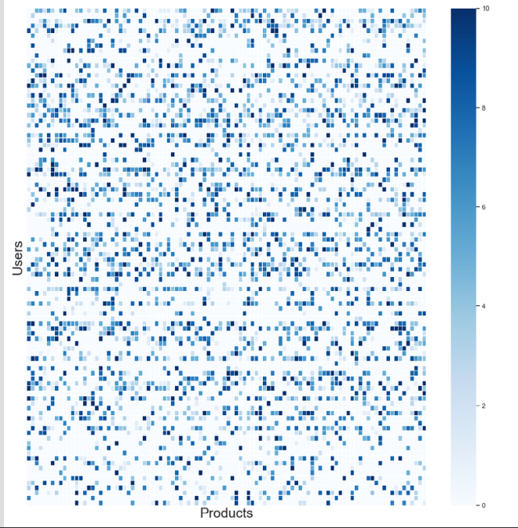
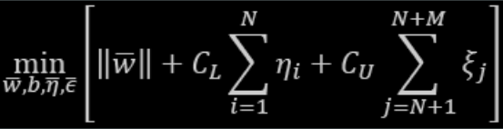
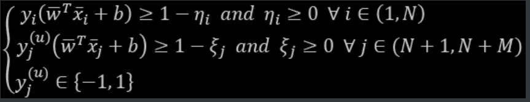

Important Functions
Random Model
# Random model.
def RandomModel(y_test, numOfClasses):
'''
This function builds a random model that predicts the class labels randomly.
INPUT:
- y_test: (Series) the series which we want to predict.
- numOfClasses: (int) number of class labels in our dataset.
OUTPUT:
- y_pred: (array) contains the probability for each class, and it will be helpful if
we have metric like 'log loss'.
'''
len_y = len(y_test)
y_pred = np.zeros((len_y, numOfClasses))
for i in range(len_y):
rand_probs = np.random.rand(1, numOfClasses)
y_pred[i] = ((rand_probs/sum(sum(rand_probs)))[0])
return y_pred
Plot Features Importance
# Take the important features from the model.
feature_importance_values = rf.feature_importances_
feature_importance = pd.DataFrame({'feature': features, 'importance': feature_importance_values})
def plot_feature_importances(df, n = 10, threshold = None):
"""Plots n most important features. Also plots the cumulative importance if
threshold is specified and prints the number of features needed to reach threshold cumulative importance.
Intended for use with any tree-based feature importances.
Args:
df (dataframe): Dataframe of feature importances. Columns must be "feature" and "importance".
n (int): Number of most important features to plot. Default is 15.
threshold (float): Threshold for cumulative importance plot. If not provided, no plot is made. Default is None.
Returns:
df (dataframe): Dataframe ordered by feature importances with a normalized column (sums to 1)
and a cumulative importance column
Note:
* Normalization in this case means sums to 1.
* Cumulative importance is calculated by summing features from most to least important
* A threshold of 0.9 will show the most important features needed to reach 90% of cumulative importance
"""
plt.style.use('fivethirtyeight')
# Sort features with most important at the head
df = df.sort_values('importance', ascending = False).reset_index(drop = True)
# Normalize the feature importances to add up to one and calculate cumulative importance
df['importance_normalized'] = df['importance'] / df['importance'].sum()
df['cumulative_importance'] = np.cumsum(df['importance_normalized'])
plt.rcParams['font.size'] = 12
# Bar plot of n most important features
df.loc[:n, :].plot.barh(y = 'importance_normalized',
x = 'feature', color = 'darkgreen',
edgecolor = 'k', figsize = (12, 8),
legend = False, linewidth = 2)
plt.xlabel('Normalized Importance', size = 18); plt.ylabel('');
plt.title(f'{n} Most Important Features', size = 18)
plt.gca().invert_yaxis()
if threshold:
# Cumulative importance plot
plt.figure(figsize = (8, 6))
plt.plot(list(range(len(df))), df['cumulative_importance'], 'b-')
plt.xlabel('Number of Features', size = 16); plt.ylabel('Cumulative Importance', size = 16);
plt.title('Cumulative Feature Importance', size = 18);
# Number of features needed for threshold cumulative importance
# This is the index (will need to add 1 for the actual number)
importance_index = np.min(np.where(df['cumulative_importance'] > threshold))
# Add vertical line to plot
plt.vlines(importance_index + 1, ymin = 0, ymax = 1.05, linestyles = '--', colors = 'red')
plt.show();
print('{} features required for {:.0f}% of cumulative importance.'.format(importance_index + 1,
100 * threshold))
return df
# Call the function
feature_importance_sorted = plot_feature_importance(feature_importance)
Custom Model
from sklearn.base import BaseEstimator, ClassifierMixin
from sklearn.utils.validation import check_X_y, check_array, check_is_fitted
from sklearn.utils.multiclass import unique_labels
from collections import defaultdict, Counter
from Levenshtein import distance, ratio
class RuleBasedClassifier(BaseEstimator, ClassifierMixin):
def __init__(self, limit=1000, sim_metric="none", out_of_score_label="Nothing Identified", verbose=False):
self.limit = limit
self.sim_metric = sim_metric
self.out_of_score_label = out_of_score_label
self.X_corpus_per_label = defaultdict(str)
self.label_counter = defaultdict(Counter)
self.unique_words_per_label = defaultdict(list)
self.verbose = verbose
def fit(self, X, y):
self.classes_ = unique_labels(y)
self._X, self._y = X, y
self._df = pd.concat([self._X, self._y], axis=1)
self._df.columns = ['sample', 'intent']
for label in self.classes_:
self.X_corpus_per_label[label] = ' '.join(self._df[self._df.index.isin(self._df[self._df['intent'] == label].index)]['sample'].values)
self.label_counter[label] = Counter(self.X_corpus_per_label[label].split())
for label1 in self.classes_:
temp_lst = []
for label2 in self.classes_:
if label1 == label2: continue
temp_lst.extend(list(self.label_counter[label2]))
self.unique_words_per_label[label1] = list(set(self.label_counter[label1]).difference(set(temp_lst)))[:self.limit]
if len(self.unique_words_per_label[label1]) == 0 and self.verbose:
print(f"[{label1}] has no unique words, so it won't be predicted!")
return self
def predict(self, X):
preds = []
for sample in X:
preds.append(self.predict_single_sample(sample))
return preds
def score(self, X, y):
y_preds = self.predict(X)
acc = sum(y_preds == y) / len(y)
return acc
def predict_single_sample(self, X:str):
if self.sim_metric == "unique":
score = self._calc_with_unique_words(X)
elif self.sim_metric.startswith("leve"):
score = self._calc_with_levenstein_ratio(X)
else:
score = self._calc_with_all_words(X)
# print(score)
score = sorted(score, reverse=True) if len(score) else [self.out_of_score_label]
return score[0]
def _calc_with_unique_words(self, X):
score = defaultdict(int)
for word in X.split():
for label in self.classes_:
if word in self.unique_words_per_label[label]:
score[label] += 1
return score
def _calc_with_all_words(self, X):
score = defaultdict(int)
for word in X.split():
for label in self.classes_:
score[label] += self.label_counter[label][word]
return score
Binary Classification:
-
LogisticRegression
For this logistic regression model, we will set the class_weight to balanced. This signals to the logistic regression algorithm that we have an imbalanced class problem;
the algorithm will need to weigh the positive labels more heavily as it trains. In this case, the weights will be inversely proportional to the class frequencies;
the algorithm will assign higher weights to the rare positive labels (i.e., fraud) and lower weights to the more frequent negative labels (i.e., not fraud).from sklearn.datasets import load_iris from sklearn.linear_model import LogisticRegression X, y = load_iris(return_X_y=True) clf = LogisticRegression(random_state=0).fit(X, y) clf.predict(X[:2, :]) # array([0, 0]) clf.predict_proba(X[:2, :]) # array([[9.8...e-01, 1.8...e-02, 1.4...e-08], # [9.7...e-01, 2.8...e-02, ...e-08]]) clf.score(X, y) # 0.97... - Random Forest
- LightGBM
- Bagging Classifier
- Stacking
-
Linear SVM
- A smaller "C" value leads to a wider street but more margin violations.
- If you SVM model is overfitting, you can try to regularize it by reducing "C".
- Unlike Logistic Regression, SVM classifier do not output probabilites for each class.
- Make sure to set "dual = False", unless there are more features than training instances.
import numpy as np from sklearn import datasets from sklearn.pipeline import Pipeline from sklearn.preprocessing import StandardScaler from sklearn.svm import LinearSVC iris = datasets.load_iris() print(list(iris.keys())) X = iris["data"][:, (2, 3)] y = (iris["target"] == 2).astype(np.float64) svm_clf = Pipeline([ ("scaler", StandardScaler()), ("linear_svc", LinearSVC(C=1, loss="hinge")) ]) svm_clf.fit(X, y)# For a huge dataset. # Supports out-of-core learning. from sklearn.linear_model import SGDClassifier svm_clf = Pipeline([ ("scaler", StandardScaler()), ("linear_svc", SGDClassifier(loss="hinge", alpha=1/(m*C))) ]) svm_clf.fit(X, y) -
Non-Linear SVM
- A smaller "C" value leads to a wider street but more margin violations.
- If you SVM model is overfitting, you can try to regularize it by reducing "C".
- Unlike Logistic Regression, SVM classifier do not output probabilites for each class.
- Make sure to set "dual = False", unless there are more features than training instances.
from sklearn.datasets import make_moons from sklearn.pipeline import Pipeline from sklearn.preprocessing import PolynomialFeatures poly_svm_clf = Pipeline([ ("poly_features", PolynomialFeatures(degree=3)), ("scaler", StandardScaler()), ("svm_clf", LinearSVC(C=10, loss="hinge")) ]) poly_svm_clf.fit(X, y) -
Polynomial Kernel SVM
- A smaller "C" value leads to a wider street but more margin violations.
- If you SVM model is overfitting, you can try to regularize it by reducing "C".
- Unlike Logistic Regression, SVM classifier do not output probabilites for each class.
- Make sure to set "dual = False", unless there are more features than training instances.
- coef0 controls how much the model is influenced by high-degree polynomials versus low-degree polynomials.
from sklearn.pipeline import Pipeline from sklearn.preprocessing import PolynomialFeatures, StandardScaler from sklearn.svm import SVC poly_kernel_svm_clf = Pipeline([ ("scaler", StandardScaler()), ("svm_clf", SVC(kernel="poly", degree=3, coef0=1, C=5)) ]) poly_kernel_svm_clf.fit(X, y) -
Gaussian RBF Kernel SVM
- If you training set is very large, you end up with an equally large number of features.
- gamma acts like a regularization hyperparameter: if your model is overfitting, you should reduce it, and if it's underfitting, you should increase it (similar to C hyperparameter).
from sklearn.pipeline import Pipeline from sklearn.preprocessing import PolynomialFeatures, StandardScaler from sklearn.svm import SVC rbf_kernel_svm_clf = Pipeline([ ("scaler", StandardScaler()), ("svm_clf", SVC(kernel="rbf", gamma=5, C=0.001)) ]) rbf_kernel_svm_clf.fit(X, y) -
RuleFit [Skope-Rules]
-
Voting Classifier
NOTE: When all models can `predict_proba`, you can set voting to `soft`, otherwise set it to `hard`.
For `SVC` to turn on his `predict_proba`, set `probability` to True.
from sklearn.datasets import make_moons from sklearn.ensemble import RandomForestClassifier, VotingClassifier from sklearn.linear_model import LogisticRegression from sklearn.svm import SVC from sklearn.metrics import accuracy_score from sklearn.model_selection import train_test_split iris = make_moons(n_samples=5000, noise=.1) X = iris[0] y = iris[1] X_train, X_valid, y_train, y_valid = train_test_split(X, y, stratify=y, test_size=.2, random_state=42) log_clf = LogisticRegression() rf_clf = RandomForestClassifier() svm_clf = SVC(probability=True) voting_clf = VotingClassifier([ ("lr", log_clf), ("rf", rf_clf), ("svc", svm_clf) ], voting="hard") for clf in (log_clf, rf_clf, svm_clf, voting_clf): clf.fit(X_train, y_train) y_pred = clf.predict(X_valid) print(clf.__class__.__name__, accuracy_score(y_valid, y_pred)) -
Bagging and Pasting
- Pasting is like `Bagging` but without bootstrapping, so to use it, set `bootstrap` to False.
- Random Patches Method Samples both training instances and features.
- Random Subspaces Method keeps all training instances (i.e. bootstrap=False and max_samples=1.0) but sampling features (i.e. bootstrap_features=True and/or max_features=smaller than 1.0)
from sklearn.ensemble import BaggingClassifier from sklearn.tree import DecisionTreeClassifier bag_clf = BaggingClassifier(DecisionTreeClassifier(), n_estimators=500, max_samples=500, bootstrap=True, n_jobs=-1, oob_score=True) bag_clf.fit(X_train, y_train) y_pred = bag_clf.predict(X_valid) print(accuracy_score(y_valid, y_pred)) print(bag_clf.oob_score_) -
Random Forest
from sklearn.ensemble import RandomForestClassifier rf_clf = RandomForestClassifier(n_estimators=500, max_leaf_nodes=16, n_jobs=-1, oob_score=True) rf_clf.fit(X_train, y_train) y_pred = rf_clf.predict(X_valid) print(accuracy_score(y_valid, y_pred)) print(rf_clf.oob_score_)Feature Importance
for name, score in zip(iris["feature_names"], rf_clf.feature_importances_): print(name, score) -
Extra-Trees
In each tree, RF tries to choose the best feature to split on, but Extra-Trees chooses the features at random.
from sklearn.ensemble import ExtraTreesClassifier rf_clf = ExtraTreesClassifier(n_estimators=500, max_leaf_nodes=16, n_jobs=-1, bootstrap=True, oob_score=True) rf_clf.fit(X_train, y_train) y_pred = rf_clf.predict(X_valid) print(accuracy_score(y_valid, y_pred)) print(rf_clf.oob_score_) -
HistGradientBoostingClassifier
# explicitly require this experimental feature from sklearn.experimental import enable_hist_gradient_boosting # noqa # now you can import normally from ensemble from sklearn.ensemble import HistGradientBoostingClassifier hgbc_model = HistGradientBoostingClassifier( l2_regularization=1.766059063693552, learning_rate=0.10675193678150449, max_bins=128, max_depth=31, max_leaf_nodes=185, random_state=2021 ) hgbc_model.fit( hgbc_x_train, y_train, ) train_oof_preds = hgbc_model.predict_proba(hgbc_x_valid)[:,-1] -
XGBoost
params_xGB = { 'nthread':16, #number of cores 'learning rate': 0.3, #range 0 to 1, default 0.3 'gamma': 0, #range 0 to infinity, default 0 # increase to reduce complexity (increase bias, reduce variance) 'max_depth': 6, #range 1 to infinity, default 6 'min_child_weight': 1, #range 0 to infinity, default 1 'max_delta_step': 0, #range 0 to infinity, default 0 'subsample': 1.0, #range 0 to 1, default 1 # subsample ratio of the training examples 'colsample_bytree': 1.0, #range 0 to 1, default 1 # subsample ratio of features 'objective':'binary:logistic', 'num_class':1, 'eval_metric':'logloss', 'seed':2018, 'silent':1 }trainingScores = [] cvScores = [] predictionsBasedOnKFolds = pd.DataFrame(data=[], index=y_train.index,columns=['prediction']) for train_index, cv_index in k_fold.split(np.zeros(len(X_train)), y_train.ravel()): X_train_fold, X_cv_fold = X_train.iloc[train_index,:], \ X_train.iloc[cv_index,:] y_train_fold, y_cv_fold = y_train.iloc[train_index], \ y_train.iloc[cv_index] dtrain = xgb.DMatrix(data=X_train_fold, label=y_train_fold) dCV = xgb.DMatrix(data=X_cv_fold) bst = xgb.cv(params_xGB, dtrain, num_boost_round=2000, nfold=5, early_stopping_rounds=200, verbose_eval=50) best_rounds = np.argmin(bst['test-logloss-mean']) bst = xgb.train(params_xGB, dtrain, best_rounds) loglossTraining = log_loss(y_train_fold, bst.predict(dtrain)) trainingScores.append(loglossTraining) predictionsBasedOnKFolds.loc[X_cv_fold.index,'prediction'] = \ bst.predict(dCV) loglossCV = log_loss(y_cv_fold, \ predictionsBasedOnKFolds.loc[X_cv_fold.index,'prediction']) cvScores.append(loglossCV) print('Training Log Loss: ', loglossTraining) print('CV Log Loss: ', loglossCV) loglossXGBoostGradientBoosting = \ log_loss(y_train, predictionsBasedOnKFolds.loc[:,'prediction']) print('XGBoost Gradient Boosting Log Loss: ', loglossXGBoostGradientBoosting) -
LightGBM
params_lightGB = { 'task': 'train', 'num_class':1, 'boosting': 'gbdt', 'objective': 'binary', 'metric': 'binary_logloss', 'metric_freq':50, 'is_training_metric':False, 'max_depth':4, 'num_leaves': 31, 'learning_rate': 0.01, 'feature_fraction': 1.0, 'bagging_fraction': 1.0, 'bagging_freq': 0, 'bagging_seed': 2018, 'verbose': -1, 'num_threads':16 }trainingScores = [] cvScores = [] predictionsBasedOnKFolds = pd.DataFrame(data=[], index=y_train.index,columns=['prediction']) for train_index, cv_index in k_fold.split(np.zeros(len(X_train)), y_train.ravel()): X_train_fold, X_cv_fold = X_train.iloc[train_index,:], \ X_train.iloc[cv_index,:] y_train_fold, y_cv_fold = y_train.iloc[train_index], \ y_train.iloc[cv_index] lgb_train = lgb.Dataset(X_train_fold, y_train_fold) lgb_eval = lgb.Dataset(X_cv_fold, y_cv_fold, reference=lgb_train) gbm = lgb.train(params_lightGB, lgb_train, num_boost_round=2000, valid_sets=lgb_eval, early_stopping_rounds=200) loglossTraining = log_loss(y_train_fold, \ gbm.predict(X_train_fold, num_iteration=gbm.best_iteration)) trainingScores.append(loglossTraining) predictionsBasedOnKFolds.loc[X_cv_fold.index,'prediction'] = \ gbm.predict(X_cv_fold, num_iteration=gbm.best_iteration) loglossCV = log_loss(y_cv_fold, \ predictionsBasedOnKFolds.loc[X_cv_fold.index,'prediction']) cvScores.append(loglossCV) print('Training Log Loss: ', loglossTraining) print('CV Log Loss: ', loglossCV) loglossLightGBMGradientBoosting = \ log_loss(y_train, predictionsBasedOnKFolds.loc[:,'prediction']) print('LightGBM Gradient Boosting Log Loss: ', loglossLightGBMGradientBoosting) -
AdaBoost
from sklearn.ensemble import AdaBoostClassifier ada_clf = AdaBoostClassifier(DecisionTreeClassifier(max_depth=1), n_estimators=200, algorithm="SAMME.R", learning_rate=.4) ada_clf.fit(X_train, y_train) y_pred = ada_clf.predict(X_valid) print(accuracy_score(y_valid, y_pred)) -
MultinomialNB
MultinomialNB is more suitable for text classification
from sklearn.naive_bayes import MultinomialNB clf = MultinomialNB(alpha=0.0, class_prior=[0.4, 0.6]) clf.fit(X_train, y_train) y_pred = ada_clf.predict(X_valid) print(accuracy_score(y_valid, y_pred)) -
Manual Stacking
Generally, if we include similarly strong solutions from different machine learning families (such as one from random forests and one from neural networks), the ensemble of the solutions will lead to a better result than any of the standalone solutions. This is because each of the standalone solutions has different strengths and weaknesses. By including the standalone solutions together in an ensemble, the strengths of some of the models compensate for the weaknesses of the others, and vice versa.
There are important caveats, though. If the standalone solutions are similarly strong, the ensemble will have better performance than any of the standalone solutions. But if one of the solutions is much better than the others, theensemble’s performance will equal the performance of the best standalone solution; the subpar solutions will contribute nothing to the ensemble’s performance.
Also, the standalone solutions need to be relatively uncorrelated. If they are very correlated, the strengths of one will mirror those of the rest, and the same will be true with the weaknesses. We will see little benefit from diversifying via an ensemble.
-
Average Ensemble
you always create folds before starting with ensembling.
# A class to choose the best weights for each model. import numpy as np from functools import partial from scipy.optimize import fmin from sklearn import metrics class OptimizeAUC: """ Class for optimizing AUC. This class is all you need to find best weights for any model and for any metric and for any types of predictions. With very small changes, this class can be used for optimization of weights in ensemble models of _any_ type of predictions """ def __init__(self): self.coef_ = 0 def _auc(self, coef, X, y): """ This functions calulates and returns AUC. :param coef: coef list, of the same length as number of models :param X: predictions, in this case a 2d array :param y: targets, in our case binary 1d array """ # multiply coefficients with every column of the array # with predictions. # this means: element 1 of coef is multiplied by column 1 # of the prediction array, element 2 of coef is multiplied # by column 2 of the prediction array and so on! x_coef = X * coef # create predictions by taking row wise sum predictions = np.sum(x_coef, axis=1) # calculate auc score auc_score = metrics.roc_auc_score(y, predictions) # return negative auc return -1.0 * auc_score def fit(self, X, y): # remember partial from hyperparameter optimization chapter? loss_partial = partial(self._auc, X=X, y=y) # dirichlet distribution. you can use any distribution you want # to initialize the coefficients # we want the coefficients to sum to 1 initial_coef = np.random.dirichlet(np.ones(X.shape[1]), size=1) # use scipy fmin to minimize the loss function, in our case auc self.coef_ = fmin(loss_partial, initial_coef, disp=True) def predict(self, X): # this is similar to _auc function x_coef = X * self.coef_ predictions = np.sum(x_coef, axis=1) return predictions# How to use it. import xgboost as xgb from sklearn.datasets import make_classification from sklearn import ensemble from sklearn import linear_model from sklearn import metrics from sklearn import model_selection # make a binary classification dataset with 10k samples # and 25 features X, y = make_classification(n_samples=10000, n_features=25) # split into two folds (for this example) xfold1, xfold2, yfold1, yfold2 = model_selection.train_test_split( X, y, test_size=0.5, stratify=y ) # fit models on fold 1 and make predictions on fold 2 # we have 3 models: # logistic regression, random forest and xgboost logreg = linear_model.LogisticRegression() rf = ensemble.RandomForestClassifier() xgbc = xgb.XGBClassifier() # fit all models on fold 1 data logreg.fit(xfold1, yfold1) rf.fit(xfold1, yfold1) xgbc.fit(xfold1, yfold1) # predict all models on fold 2 # take probability for class 1 pred_logreg = logreg.predict_proba(xfold2)[:, 1] pred_rf = rf.predict_proba(xfold2)[:, 1] pred_xgbc = xgbc.predict_proba(xfold2)[:, 1] # create an average of all predictions # that is the simplest ensemble avg_pred = (pred_logreg + pred_rf + pred_xgbc) / 3 # a 2d array of all predictions fold2_preds = np.column_stack(( pred_logreg, pred_rf, pred_xgbc, avg_pred )) # calculate and store individual AUC values aucs_fold2 = [] for i in range(fold2_preds.shape[1]): auc = metrics.roc_auc_score(yfold2, fold2_preds[:, i]) aucs_fold2.append(auc) print(f"Fold-2: LR AUC = {aucs_fold2[0]}") print(f"Fold-2: RF AUC = {aucs_fold2[1]}") print(f"Fold-2: XGB AUC = {aucs_fold2[2]}") print(f"Fold-2: Average Pred AUC = {aucs_fold2[3]}") # now we repeat the same for the other fold # this is not the ideal way, if you ever have to repeat code, # create a function! # fit models on fold 2 and make predictions on fold 1 logreg = linear_model.LogisticRegression() rf = ensemble.RandomForestClassifier() xgbc = xgb.XGBClassifier() logreg.fit(xfold2, yfold2) rf.fit(xfold2, yfold2) xgbc.fit(xfold2, yfold2) pred_logreg = logreg.predict_proba(xfold1)[:, 1] pred_rf = rf.predict_proba(xfold1)[:, 1] pred_xgbc = xgbc.predict_proba(xfold1)[:, 1] avg_pred = (pred_logreg + pred_rf + pred_xgbc) / 3 fold1_preds = np.column_stack(( pred_logreg, pred_rf, pred_xgbc, avg_pred )) aucs_fold1 = [] for i in range(fold1_preds.shape[1]): auc = metrics.roc_auc_score(yfold1, fold1_preds[:, i]) aucs_fold1.append(auc) print(f"Fold-1: LR AUC = {aucs_fold1[0]}") print(f"Fold-1: RF AUC = {aucs_fold1[1]}") print(f"Fold-1: XGB AUC = {aucs_fold1[2]}") print(f"Fold-1: Average prediction AUC = {aucs_fold1[3]}") # find optimal weights using the optimizer opt = OptimizeAUC() # dont forget to remove the average column opt.fit(fold1_preds[:, :-1], yfold1) opt_preds_fold2 = opt.predict(fold2_preds[:, :-1]) auc = metrics.roc_auc_score(yfold2, opt_preds_fold2) print(f"Optimized AUC, Fold 2 = {auc}") print(f"Coefficients = {opt.coef_}") opt = OptimizeAUC() opt.fit(fold2_preds[:, :-1], yfold2) opt_preds_fold1 = opt.predict(fold1_preds[:, :-1]) auc = metrics.roc_auc_score(yfold1, opt_preds_fold1) print(f"Optimized AUC, Fold 1 = {auc}") print(f"Coefficients = {opt.coef_}")
Multi-Class Classification:
NOTE: Sklearn detects when you try to use a binary classification algorithm for a multi-class classification task, and it automatically runs OvA (except for SVM classifiers for which it uses OvO).
One Vs. All
from sklearn.multiclass import OneVsAllClassifier
ova_clf = OneVsAll(SVC(random_state=42))
ova_clf.fit(X_train, y_train)
One Vs. One
from sklearn.multiclass import OneVsOneClassifier
ovo_clf = OneVsOneClassifier(SGDClassifier(random_state=42))
ovo_clf.fit(X_train, y_train)
ovo_clf.predict([some_digit])
Regression:
-
Linear Regression
# Fast when we have large training instance. # Slow when we have large numer of features. # Doesn't require scaling!! from sklearn.linear_models import LinearRegression lin_reg = LinearRegression() lin_reg.fit(X, y) print(lin_reg.intercept_) print(lin_reg.coef_) -
SGD Regressor
# Fast when we have large training instances. # Fast when we have large number of features too! # Change the thetas at each instance. # gives a better thetas than GD, but not the best! # Requires Scaling!! from sklearn.linear_model import SGDRegressor sgd_reg = SGDRegressor(max_iter=1000, tol=1e-3, penalty=None, eta0=0.1) sgd_reg.fit(X, y.ravel()) sgd_reg.intercept_, sgd_reg.coef_SGD with Early Stopping
from sklearn.base import clone from sklearn.preprocessing import StandardScaler # Prepare the data. poly_scaler = Pipeline([ ("poly_features", PolynomialFeatures(degree=90, include_bias=False)), ("std_scaler", StandardScaler()) ]) X_train_poly_scaled = poly_scaler.fit_transform(X_train) X_valid_poly_scaled = poly_scaler.transform(X_valid) # Note: warm_start=True, when fit() method is called, it just continues training # where it left off instead of restarting from scratch. sgd_reg = SGDRegressor(max_iter=1, tol=-np.infty, warm_start=True, penalty=None, learning_rate="constant", eta0=0.0005) minimum_valid_error = float("inf") best_epoch = None best_model = None for epoch in range(1000): sgd_reg.fit(X_train_poly_scaled, y_train) # continues where it left off. y_valid_preds = sgd_reg.predict(X_valid_poly_scaled) valid_error = mean_squared_error(y_valid, y_valid_preds) if valid_error < minimum_valid_error: minimum_valid_error, best_epoch, best_model = valid_error, epoch, clone(sgd_reg) -
Polynomial Regressor
# Create the polynomial features. # WATCH THE NUMBER OF FEATURES = (n + d)!/d! * n! # where n = number of features. # where d = degree. from sklearn.preprocessing import PolynomialFeatures from sklearn.pipeline import Pipeline poly_model = Pipeline([ ("poly_features", PolynomialFeatures(degree=10, include_bias=False)), ("lin_reg", LinearRegression()) ]) poly_model.fit(X, y) -
Isotonic Regression
An isotonic regression assumes the monotonicity of the dependent variable and tries to find a set of N weights, wi, so as to minimize the weighted least-square loss
from sklearn.isotonic import IsotonicRegression ir = IsotonicRegression() ir.fit(x, y) -
Ridge Regressor [L2 Regulaizer]
NOTE: Requires Scalling and you can make it polynomial as Linear Regression.
# Also called "Tikhonov Regularization", L2. # if alpha = 0, the Ridge Regression is just a Linear Regression. # if alpha = v.large, then all weights end up v.close to zero. # 1. Ridge using Closed-form solution. from sklearn.linear_model import Ridge # you can use solver="sag" too. ridge_reg = Ridge(alpha=1, solver="cholesky", normalize=True) ridge_reg.fit(X, y) # 2. Ridge using Gradient Descent. from sklearn.linear_model import SGDRegressor sgd_reg = SGDRegressor(penalty="l2") sgd_reg.fit(X, y.ravel()) sgd_reg.predict([[1.5]]) -
Lasso Regressor [L1 Regulaizer]
NOTE: Requires Scalling and you can make it polynomial as Linear Regression.
# 1. Lasso using Closed-form solution. from sklearn.linear_model import Lasso lasso_reg = Lasso(alpha=0.1) lasso_reg.fit(X, y) lasso_reg.predict([[1.5]]) # 2. Ridge using Gradient Descent. from sklearn.linear_model import SGDRegressor sgd_reg = SGDRegressor(penalty="l1") sgd_reg.fit(X, y.ravel()) sgd_reg.predict([[1.5]]) -
Elastic Net [L1 + L2 Regulaizer]
NOTE: Requires Scalling and you can make it polynomial as Linear Regression.
# when r = 0, Elastic Net = Ridge Regression. # when r = 1, Elastic Net = Lasso Regression. # 1. ElasticNet using Closed-form solution. from sklearn.linear_model import ElasticNet elastic_net = ElasticNet(alpha=.1, l1_ratio=.5) elastic_net.fit(X, y) elastic_net.predict([[1.5]]) -
RuleFit
The algorithm can be used for predicting an output vector y given an input matrix X. In the first step a tree ensemble is generated with gradient boosting. The trees are then used to form rules, where the paths to each node in each tree form one rule. A rule is a binary decision if an observation is in a given node, which is dependent on the input features that were used in the splits. The ensemble of rules together with the original input features are then being input in a L1-regularized linear model, also called Lasso, which estimates the effects of each rule on the output target but at the same time estimating many of those effects to zero.
# pip install git+git://github.com/christophM/rulefit.git # TRAIN the Model. import numpy as np import pandas as pd from rulefit import RuleFit boston_data = pd.read_csv("boston.csv", index_col=0) y = boston_data.medv.values X = boston_data.drop("medv", axis=1) features = X.columns X = X.as_matrix() rf = RuleFit() rf.fit(X, y, feature_names=features)# If you want to have influence on the tree generator you can pass the generator as argument: from sklearn.ensemble import GradientBoostingRegressor gb = GradientBoostingRegressor(n_estimators=500, max_depth=10, learning_rate=0.01) rf = RuleFit(gb) rf.fit(X, y, feature_names=features)
You can create new features with these rules, and then apply linear models or other models and see the result.# Predict: rf.predict(X) # Inspect Rules: rules = rf.get_rules() rules = rules[rules.coef != 0].sort_values("support", ascending=False) rules.head() -
Linear SVM
- A smaller "C" value leads to a wider street but more margin violations.
- If you SVM model is overfitting, you can try to regularize it by reducing "C".
- Unlike Logistic Regression, SVM classifier do not output probabilites for each class.
- Make sure to set "dual = False", unless there are more features than training instances.
from sklearn.svm import LinearSVR svm_reg = LinearSVR(epsilon=1.5) svm_reg.fit(X, y) -
Kernel SVM
- A smaller "C" value leads to a wider street but more margin violations.
- If you SVM model is overfitting, you can try to regularize it by reducing "C".
- Unlike Logistic Regression, SVM classifier do not output probabilites for each class.
- Make sure to set "dual = False", unless there are more features than training instances.
from sklearn.svm import SVR svm_poly_reg = SVR(kernel="poly", degree=2, C=100, epsilon=.1) svm_poly_reg.fit(X, y) -
Gradient Boosting
# GBDT with early stopping but run all the iterations. from sklearn.ensemble import GradientBoostingRegressor from sklearn import metrics gbrt = GradientBoostingRegressor(max_depth=2, n_estimators=200) gbrt.fit(X_train, y_train) errors = [metrics.mean_squared_error(y_valid, y_pred) for y_pred in gbrt.staged_predict(X_valid)] bst_n_estimators = np.argmin(errors) print(bst_n_estimators) gbrt_best = GradientBoostingRegressor(max_depth=2, n_estimators=bst_n_estimators) gbrt_best.fit(X_train, y_train) y_pred = gbrt_best.predict(X_valid) print(metrics.mean_absolute_error(y_valid, y_pred))# Early Stopping but breaks when there's no improvment. gbrt = GradientBoostingRegressor(max_depth=2, warm_start=True) min_valid_error = float("inf") error_going_up = 0 for n_estimators in range(1, 120): gbrt.n_estimators = n_estimators gbrt.fit(X_train, y_train) y_pred = gbrt.predict(X_valid) valid_error = metrics.mean_squared_error(y_valid, y_pred) if valid_error < min_valid_error: min_valid_error, error_going_up = valid_error, 0 else: error_going_up += 1 if error_going_up == 5: break # Early Stopping -
XGBoost
import xgboost xgb_reg = xgboost.XGBRegressor(n_estimators=200, max_depth=4) xgb_reg.fit(X_train, y_train, eval_set=[(X_train, y_train), (X_valid, y_valid)], early_stopping_rounds=200) y_pred = xgb_reg.predict(X_valid) print(metrics.mean_absolute_error(y_valid, y_pred)) -
Stacking
X_val_predictions = np.empty((len(X_val), len(estimators)), dtype=np.float32) for index, estimator in enumerate(estimators): X_val_predictions[:, index] = estimator.predict(X_val) # Meta Model rnd_forest_blender = RandomForestClassifier(n_estimators=200, oob_score=True, random_state=42) rnd_forest_blender.fit(X_val_predictions, y_val) # Predictions X_test_predictions = np.empty((len(X_test), len(estimators)), dtype=np.float32) for index, estimator in enumerate(estimators): X_test_predictions[:, index] = estimator.predict(X_test) y_pred = rnd_forest_blender.predict(X_test_predictions) - K Nearest Neighbors
- Decision Tree
- Random Forest
- Bagging Regressor
- Stacking
- Regression Splines - NOT COMPLETE
Linear Regression + Hubor Loss
Robust to outliers
from sklearn.linear_model import HuberRegressor
hr = HuberRegressor(epsilon=1.2)
hr.fit(x, y.ravel())
print("Huber: {:.2f}".
format(mean_absolute_error(y, hr.predict(x))))Clustering:
-
K-Means
K-means code
from numpy import unique from numpy import where from matplotlib import pyplot from sklearn.datasets import make_classification from sklearn.cluster import KMeans # initialize the data set we'll work with training_data,_ = make_classification( n_samples=1000, n_features=2, n_informative=2, n_redundant=0, n_clusters_per_class=1, random_state=4 ) # define the model kmeans_model = KMeans(n_clusters=2) # assign each data point to a cluster kmeans_result = kmeans_model.fit_predict(training_data) # get all of the unique clusters kmeans_clusters = unique(kmeans_result) # plot the kmeans clusters fordbscan_cluster inkmeans_clusters: # get data points that fall in this cluster index = where(kmeans_result == kmeans_clusters) # make the plot pyplot.scatter(training_data[index, 0],training_data[index, 1]) # show the DBSCAN plot pyplot.show()Determine n_clusters by silhouette score, Elbow methods
Beside Elbow method, we can use silhouette coefficient too
The silhouette coefficient is used when the ground-truth about the dataset is unknown, instead computing the density of clusters produced by the model. A silhouette score can then be calculated by averaging the silhouette coefficient for each sample, computed as the difference between the average intracluster distance and the mean nearest-cluster distance for each sample, normalized by the maximum value.
This produces a score between 1 and -1, where 1 is highly dense clusters, -1 is completely incorrect clustering, and values near zero indicate overlapping clusters. The higher the score the better, because the clusters are denser and more separate. Negative values imply that samples have been assigned to the wrong cluster, and positive values mean that there are discrete clusters. The scores can then be plotted to display a measure of how close each point in one cluster is to points in the neighboring clusters.# silhouette = (b - a) / max(a, b) # a = mean distance to the other instances in the same cluster. # b = mean nearest-cluster distance. # silhouette varies from -1 to +1, +1 means the instance is well inside its own cluster and far from othe clusters, and 0 means it's close to a cluster boundary, and -1 means that the instance may have been assigned to the wrong cluster. # Visualize silhouette coef. for different k (n of clusters). # The k with the larger silhouette is the best. from sklearn.metrics import silhouette_score silhouette_scores = [silhouette_score(X, model.labels_) for model in kmeans_per_k[1:]] # Visualize plt.figure(figsize=(8, 3)) plt.plot(range(2, 10), silhouette_scores, "bo-") plt.xlabel("$k$", fontsize=14) plt.ylabel("Silhouette score", fontsize=14) plt.axis([1.8, 8.5, 0.55, 0.7]) save_fig("silhouette_score_vs_k_plot") plt.show()from sklearn.cluster import KMeans from yellowbrick.cluster import SilhouetteVisualizer # Instantiate the clustering model and visualizer visualizer = SilhouetteVisualizer(KMeans(n_clusters=6)) visualizer.fit(docs) visualizer.poof()Elbow Methods using Yellowbrick
from sklearn.cluster import KMeans from yellowbrick.cluster import KElbowVisualizer # Instantiate the clustering model and visualizer visualizer = KElbowVisualizer(KMeans(), metric='silhouette', k=[4,10]) visualizer.fit(docs) visualizer.poof()
-
K-Nearest Neighbors
from sklearn.neighbors import NearestNeighbors # you can choose different algorithm ball_tree, k-d tree, knn. knn = NearestNeighbors(n_neighbors=50, leaf_size=30, algorithm='ball_tree') knn.fit(X_train) -
BIRCH
The Balance Iterative Reducing and Clustering using Hierarchies (BIRCH) algorithm work better on large data sets than the k-means algorithm.
It breaks the data into little summaries that are clustered instead of the original data points. The summaries hold as much distribution information about the data points as possible.This algorithm is commonly used with another clustering algorithm because the other clustering techniques can be used on the summaries generated by BIRCH.
The main downside of the BIRCH algorithm is that it only works on numeric data values. You can't use this for categorical values unless you do some data transformations.# Import required libraries and modules import matplotlib.pyplot as plt from sklearn.datasets.samples_generator import make_blobs from sklearn.cluster import Birch # Generating 600 samples using make_blobs dataset, clusters = make_blobs(n_samples = 600, centers = 8, cluster_std = 0.75, random_state = 0) # Creating the BIRCH clustering model model = Birch(branching_factor = 50, n_clusters = None, threshold = 1.5) # Fit the data (Training) model.fit(dataset) # Predict the same data pred = model.predict(dataset) # Creating a scatter plot plt.scatter(dataset[:, 0], dataset[:, 1], c = pred, cmap = 'rainbow', alpha = 0.7, edgecolors = 'b') plt.show() -
Affinity Propagation
Affinity propagation (AP) is a graph based clustering algorithm similar to k Means or K medoids, which does not require the estimation of the number of clusters before running the algorithm. Affinity propagation finds “exemplars” i.e. members of the input set that are representative of clusters.
Each data point communicates with all of the other data points to let each other know how similar they are and that starts to reveal the clusters in the data. You don't have to tell this algorithm how many clusters to expect in the initialization parameters.
from numpy import unique from numpy import where from matplotlib import pyplot from sklearn.datasets import make_classification from sklearn.cluster import AffinityPropagation # initialize the data set we'll work with training_data, _ = make_classification( n_samples=1000, n_features=2, n_informative=2, n_redundant=0, n_clusters_per_class=1, random_state=4 ) # define the model model = AffinityPropagation(damping=0.7) # train the model model.fit(training_data) # assign each data point to a cluster result = model.predict(training_data) # get all of the unique clusters clusters = unique(result) # plot the clusters for cluster in clusters: # get data points that fall in this cluster index = where(result == cluster) # make the plot pyplot.scatter(training_data[index, 0], training_data[index, 1]) # show the plot pyplot.show() -
Gaussian Mixture Model
Gaussian mixture models (GMMs) are often used for data clustering. You can use GMMs to perform either hard clustering or soft clustering on query data. To perform hard clustering, the GMM assigns query data points to the multivariate normal components that maximize the component posterior probability, given the data.
Gaussian Mixture Models (GMMs) assume that there are a certain number of Gaussian distributions, and each of these distributions represent a cluster. Hence, a Gaussian Mixture Model tends to group the data points belonging to a single distribution together.
from numpy import unique from numpy import where from matplotlib import pyplot from sklearn.datasets import make_classification from sklearn.mixture import GaussianMixture # initialize the data set we'll work with training_data, _ = make_classification( n_samples=1000, n_features=2, n_informative=2, n_redundant=0, n_clusters_per_class=1, random_state=4 ) # define the model gaussian_model = GaussianMixture(n_components=2) # train the model gaussian_model.fit(training_data) # assign each data point to a cluster gaussian_result = gaussian_model.predict(training_data) # get all of the unique clusters gaussian_clusters = unique(gaussian_result) # plot Gaussian Mixture the clusters for gaussian_cluster in gaussian_clusters: # get data points that fall in this cluster index = where(gaussian_result == gaussian_clusters) # make the plot pyplot.scatter(training_data[index, 0], training_data[index, 1]) # show the Gaussian Mixture plot pyplot.show() -
Fuzzy C-means
# pip install -U scikit-fuzzy from skfuzzy.cluster import cmeans # c, the number of clusters; # the coefficient m, error, which is the maximum tolerance; # and maxiter, which is the maximum number of iterations. fc, W, _, _, _, _, pc = \ cmeans(X_train.T, c=10, m=1.25, error=1e-6, maxiter=10000, seed=1000) # The cmeans function returns many values, but for our purposes, the most important are: # the first one, which is the array containing the cluster centroids; # the second one, which is the final membership degree matrix; # and the last one, the partition coefficient. # In order to analyze the result, we can start with the partition coefficient: print('Partition coeffiecient: {}'.format(pc)) # Partition coeffiecient: 0.6320708707346328 # When PC is bounded between 0 and 1, when it's close to 0, it means that the membership degrees have a flat distribution and the level of fuzziness is the highest possible. # On the other hand, if it's close to 1, each row of W has a single dominant value, while all the others are negligible.# The membership degrees associated with the previous sample are: print('Membership degrees: {}'.format(W[:, 7])) # Membership degrees: [0.00373221 0.01850326 0.00361638 # 0.01032591 0.86078292 0.02926149 # 0.03983662 0.00779066 0.01432076 # 0.0118298]import numpy as np from skfuzzy.cluster import cmeans_predict new_sample = np.expand_dims(X_train[7], axis=1) Wn, _, _, _, _, _ = \ cmeans_predict(new_sample, cntr_trained=fc, m=1.25, error=1e-6, maxiter=10000, seed=1000) print('Membership degrees: {}'.format(Wn.T)) # Membership degrees: [[0.00373221 0.01850326 0.00361638 # 0.01032591 0.86078292 0.02926149 # 0.03983662 0.00779066 0.01432076 # 0.0118298]] -
Spectral Clustering
from sklearn.cluster import SpectralClustering sc = SpectralClustering(n_clusters=2, affinity='nearest_neighbors', n_neighbors=20, random_state=1000) Y_sc = sc.fit_predict(Xs) -
DBSCAN
# Create a dataset from sklearn.cluster import DBSCAN from sklearn.metrics import calinski_harabasz_score from sklearn.metrics import davies_bouldin_score import numpy as np ch = [] db = [] no = [] for e in np.arange(0.1, 0.5, 0.02): dbscan = DBSCAN(eps=e, min_samples=8, leaf_size=50) Y = dbscan.fit_predict(X) ch.append(calinski_harabasz_score(X, Y)) db.append(davies_bouldin_score(X, Y)) no.append(np.sum(Y == -1))
from sklearn.cluster import DBSCAN dbscan = DBSCAN(eps=0.2, min_samples=8, leaf_size=50) Y = dbscan.fit_predict(X) print("No. clusters: {}".format(np.unique(dbscan.labels_).shape)) print("No. noisy points: {}".format(np.sum(Y == -1))) print("CH = {}".format(calinski_harabasz_score(X, Y))) print("DB = {}".format(davies_bouldin_score(X, Y))) # No. clusters: (54,) # No. noisy points: 2098 # CH = 100.91669074221588 # DB = 1.4949468861242001Observation:
Let's start with the number of noisy points. As expected, the function monotonically decreases because larger values yield less cohesive clusters. However, there are two important considerations. The first one is that we need to assume a moderate number of noisy points because of the geographical structure of the map (that is, there are always suburbs or low-density areas around the centers). The second is that the function has a clear slope reduction in the range (0.2, 0.3). This indicates that, after a threshold, the number of noisy points almost stabilizes to a limit value corresponding to the total number of points that can be incorporated into clusters only when they become extremely overlapped. This is also confirmed by the Davies-Bouldin score, which increases abruptly in the same range. On the other hand, the Calinski-Harabasz score is at a maximum when and the Davies-Bouldin score is at a minimum at the same value. Therefore, also thanks to the considerations about the noisy points, we can accept as the optimal value and perform clustering with nmin = 8 and a leaf size equal to a reasonable value of
-
Spectral Biclustering
Biclustering is a family of methods that operate on matrices whose rows and columns represent different features connected with a precise rationale.
import numpy as np nb_users = 100 nb_products = 100 items = [i for i in range(nb_products)] transactions = [] ratings = np.zeros(shape=(nb_users, nb_products), dtype=np.int) for i in range(nb_users): n_items = np.random.randint(2, 60) transaction = tuple( np.random.choice(items, replace=False, size=n_items)) transactions.append( list(map(lambda x: "P{}".format(x + 1), transaction))) for t in transaction: rating = np.random.randint(1, 11) ratings[i, t] = ratingThe matrix is sparse (when the dimensionality is larger, I suggest employing SciPy sparse matrices to save space), but every user has rated at least 2 products, with an approximate average of 30. In this example, we are interested in discovering the segments of user/product mixes characterized by the same rating. As each rating is in the range (1, 10), also considering the non-rating segment, there are 10 different possible biclusters with immediate semantics.
At this point, we can train the model using n_best=5 to indicate that we want to project the dataset onto the top five singular vectors and svd_solver="arpack", which is a very accurate SVD algorithm suitable for small/medium-sized matrices:from sklearn.cluster.bicluster import SpectralBiclustering sbc = SpectralBiclustering(n_clusters=10, n_best=5, svd_method="arpack", n_jobs=-1, random_state=1000) sbc.fit(ratings) rc = np.outer(np.sort(sbc.row_labels_) + 1, np.sort(sbc.column_labels_) + 1)Before showing the final result, we want to demonstrate how to find the mixes. Let's suppose that we are interested in determining the group of users {ui, uj, …, ut} that rated a group of eight products {pi, pj, …, pt} in order to send a periodical newsletter containing tailored recommendations. This operation can be easily achieved by selecting all the rows and columns associated with the biclusters with an index of 8 (remember that 0 corresponds to the absence of a rating):
import numpy as np print("Users: {}".format( np.where(sbc.rows_[8, :] == True))) print("Product: {}".format( np.where(sbc.columns_[8, :] == True))) # Users: (array([30, 35, 40, 54, 61, 86, 87, 91, 94], dtype=int64),) # Product: (array([49, 68, 93], dtype=int64),) # Therefore, we can check the family of the products {49, 68, 93}, select some similar items, # and send them in the suggestion part of the newsletter to the users {30, 35, 40, 54, 61, 86, 87, 91, 94}. -
Apriori Algorithm
Suppose you have a transaction of products, Apriori Algorithm determines which combinations of producted are got purchased together. So you can use it to recommand to users in the next time. Example: A user could buy a phone, cover, and a head-set.
# pip install -U efficient-apriori from efficient_apriori import apriori _, rules = apriori(transactions, min_support=0.15, min_confidence=0.75, max_length=3, verbosity=1) # The output of the previous snippet is: # Generating itemsets. # Counting itemsets of length 1. # Found 100 candidate itemsets of length 1. # Found 100 large itemsets of length 1. # Counting itemsets of length 2. # Found 4950 candidate itemsets of length 2. # Found 1156 large itemsets of length 2. # Counting itemsets of length 3. # Found 6774 candidate itemsets of length 3. # Found 9 large itemsets of length 3. # Itemset generation terminated. # Generating rules from itemsets. # Generating rules of size 2. # Generating rules of size 3. # Rule generation terminated.print("No. rules: {}".format(len(rules))) for r in rules: print(r) # The output is as follows: # No. rules: 22 # {P31, P79} -> {P100} (conf: 0.789, supp: 0.150, lift: 2.024, conv: 2.897) # {P100, P79} -> {P31} (conf: 0.789, supp: 0.150, lift: 2.134, conv: 2.992) # {P66, P68} -> {P100} (conf: 0.789, supp: 0.150, lift: 2.024, conv: 2.897) # {P100, P68} -> {P66} (conf: 0.750, supp: 0.150, lift: 2.419, conv: 2.760) # {P11, P97} -> {P55} (conf: 0.750, supp: 0.150, lift: 2.143, conv: 2.600) # {P11, P55} -> {P97} (conf: 0.789, supp: 0.150, lift: 2.024, conv: 2.897) # {P21, P7} -> {P15} (conf: 0.789, supp: 0.150, lift: 2.134, conv: 2.992) # {P15, P7} -> {P21} (conf: 0.750, supp: 0.150, lift: 2.206, conv: 2.640) # {P15, P21} -> {P7} (conf: 0.750, supp: 0.150, lift: 2.027, conv: 2.520) # {P46, P83} -> {P15} (conf: 0.789, supp: 0.150, lift: 2.134, conv: 2.992) # {P15, P83} -> {P46} (conf: 0.750, supp: 0.150, lift: 1.974, conv: 2.480) # {P15, P46} -> {P83} (conf: 0.789, supp: 0.150, lift: 2.322, conv: 3.135) # {P59, P65} -> {P15} (conf: 0.750, supp: 0.150, lift: 2.027, conv: 2.520) # {P15, P65} -> {P59} (conf: 0.789, supp: 0.150, lift: 2.078, conv: 2.945) # {P55, P68} -> {P36} (conf: 0.750, supp: 0.150, lift: 2.419, conv: 2.760) # {P36, P68} -> {P55} (conf: 0.789, supp: 0.150, lift: 2.256, conv: 3.087) # {P36, P55} -> {P68} (conf: 0.789, supp: 0.150, lift: 2.024, conv: 2.897) # {P4, P97} -> {P55} (conf: 0.842, supp: 0.160, lift: 2.406, conv: 4.117) # {P4, P55} -> {P97} (conf: 0.800, supp: 0.160, lift: 2.051, conv: 3.050) # {P56, P79} -> {P47} (conf: 0.762, supp: 0.160, lift: 2.116, conv: 2.688) # {P47, P79} -> {P56} (conf: 0.842, supp: 0.160, lift: 2.216, conv: 3.927) # {P47, P56} -> {P79} (conf: 0.842, supp: 0.160, lift: 2.477, conv: 4.180)it's extremely easy to associate the lift with the probability of finding the product in a random transaction. In most real cases, a lift in the range (1.5, 2.5) is quite reasonable, while rules with, for example, a lift corresponding to S(B) < 0.05 cannot be considered solid enough to be trusted even if the confidence is large. On the other hand, a support S(B) close to 1 is associated with a trivial rule, because most of the transactions contain that product (for example, a convenience store could have accidently included the shopping bags in the transactions, and therefore their lift is often close to 1, but it doesn 't make sense to recommend them). The optimal threshold for lift depends on the context and, contrary to confidence, it is better to define an interval because low and high values are both negative indicators for all affected rules.
- AgglomerativeClustering
Semi-Supervised Learning Models
-
Gaussian Mixture
class sklearn.mixture.GaussianMixture(n_components=1, *, covariance_type='full ', tol=0.001, reg_covar=1e-06, max_iter=100, n_init=1, init_params='kmeans ', weights_init=None, means_init=None, precisions_init=None, random_state=None, warm_start=False, verbose=0, verbose_interval=10)[source] -
Self-Training
Read master ML book - Page: 87nb_samples = X.shape[0] nb_labeled = 20 nb_unlabeled = nb_samples - nb_labeled nb_unlabeled_samples = 2 X_train = X[:nb_labeled] Y_train = Y[:nb_labeled] X_unlabeled = X[nb_labeled:]import numpy as np from sklearn.naive_bayes import GaussianNB while X_train.shape[0] <= nb_samples: nb = GaussianNB() nb.fit(X_train, Y_train) if X_train.shape[0] == nb_samples: break probs = nb.predict_proba(X_unlabeled) top_confidence_idxs = np.argsort(np.max(probs, axis=1)).astype(np. int64)[::-1] selected_idxs = top_confidence_idxs[0:nb_unlabeled_samples] X_new_train = X_unlabeled[selected_idxs] Y_new_train = nb.predict(X_new_train) X_train = np.concatenate((X_train, X_new_train), axis=0) Y_train = np.concatenate((Y_train, Y_new_train), axis=0) X_unlabeled = np.delete(X_unlabeled, selected_idxs, axis=0) -
Co-Training
from sklearn.datasets import load_wine from sklearn.utils import shuffle wine = load_wine() X, Y = shuffle(wine['data '], wine['target '], random_state=1000)nb_samples = X.shape[0] nb_labeled = 20 nb_unlabeled = nb_samples - nb_labeled nb_unlabeled_samples = 2 feature_cut = 7 X_unlabeled = X[-nb_unlabeled:] X_labeled = X[:nb_labeled] Y_labeled = Y[:nb_labeled] X_labeled_1 = X_labeled[:, 0:feature_cut] X_labeled_2 = X_labeled[:, feature_cut:]from sklearn.naive_bayes import GaussianNB from sklearn.metrics import classification_report nb0 = GaussianNB() nb0.fit(X_labeled, Y_labeled) print(classification_report(Y, nb0.predict(X), target_names=wine['target_names ']))import numpy as np from sklearn.naive_bayes import GaussianNB nb1 = None nb2 = None while X_labeled_1.shape[0] <= nb_samples: nb1 = GaussianNB() nb1.fit(X_labeled_1, Y_labeled) nb2 = GaussianNB() nb2.fit(X_labeled_2, Y_labeled) if X_labeled_1.shape[0] == nb_samples: break probs1 = nb1.predict_proba(X_unlabeled[:, 0:feature_cut]) top_confidence_idxs1 = np.argsort(np.max(probs1, axis=1))[::-1] selected_idxs1 = top_confidence_idxs1[0:nb_unlabeled_samples] probs2 = nb2.predict_proba(X_unlabeled[:, feature_cut:]) top_confidence_idxs2 = np.argsort(np.max(probs2, axis=1))[::-1] selected_idxs2 = top_confidence_idxs2[0:nb_unlabeled_samples] selected_idxs = list(selected_idxs1) + list(selected_idxs2) X_new_labeled = X_unlabeled[selected_idxs] X_new_labeled_1 = X_unlabeled[selected_idxs1, 0:feature_cut] X_new_labeled_2 = X_unlabeled[selected_idxs2, feature_cut:] Y_new_labeled_1 = nb1.predict(X_new_labeled_1) Y_new_labeled_2 = nb2.predict(X_new_labeled_2) X_labeled_1 = np.concatenate((X_labeled_1, X_new_labeled[:, 0:feature_cut]), axis=0) X_labeled_2 = np.concatenate((X_labeled_2, X_new_labeled[:, feature_cut:]), axis=0) Y_labeled = np.concatenate((Y_labeled, Y_new_labeled_1, Y_new_labeled_2), axis=0) X_unlabeled = np.delete(X_unlabeled, selected_idxs, axis=0) print(classification_report(Y, nb1.predict(X[:, 0:feature_cut]), target_names=wine['target_names '])) -
Contrastive Pessimistic Likelihood Estimation (CPLE)
Read page: 104 - Book: Mastering Machine Learning Algorithms [Expert Insight]
from sklearn.datasets import load_digits import numpy as np X_a, Y_a = load_digits(return_X_y=True) X = np.vstack((X_a[Y_a == 0], X_a[Y_a == 1])) Y = np.vstack((np.expand_dims(Y_a, axis=1)[Y_a==0], np.expand_dims(Y_a, axis=1)[Y_a==1])) nb_samples = X.shape[0] nb_dimensions = X.shape[1] nb_unlabeled = 150 Y_true = np.zeros((nb_unlabeled,)) unlabeled_idx = np.random.choice(np.arange(0, nb_samples, 1), replace=False, size=nb_unlabeled) Y_true = Y[unlabeled_idx].copy() Y[unlabeled_idx] = -1from sklearn.linear_model import LogisticRegression lr_test = LogisticRegression(solver="lbfgs", max_iter=10_000, multi_class="auto", n_jobs=-1, random_state=1000) lr_test.fit(X[Y.squeeze() != -1], Y[Y.squeeze() != -1].squeeze()) unlabeled_score = lr_test.score(X[Y.squeeze() == -1], Y_true) # 0.573333333333from sklearn.model_selection import cross_val_score total_cv_scores = cross_val_score(LogisticRegression(solver="lbfgs", max_iter=10_000, multi_class="auto", random_state=1000), X, Y.squeeze(), cv=10, n_jobs=-1) print(total_cv_scores)# Implement CPLE lr = LogisticRegression(solver="lbfgs", max_iter=10_000, multi_class="auto", random_state=1000) q0 = np.random.uniform(0, 1, size=nb_unlabeled) trh = np.vectorize(lambda x: 0.0 if x < 0.5 else 1.0)def weighted_log_loss(yt, p, w=None, eps=1e-15): if w is None: w_t = np.ones((yt.shape[0], 2)) else: w_t = np.vstack((w, 1.0 - w)).T Y_t = np.vstack((1. - yt.squeeze(), yt.squeeze())).T L_t = np.sum(w_t * Y_t * np.log(np.clip(p, eps, 1. - eps)), axis=1) return np.mean(L_t)def build_dataset(q): Y_unlabeled = trh(q) X_n = np.zeros((nb_samples, nb_dimensions)) X_n[0:nb_samples - nb_unlabeled] = X[Y.squeeze() != -1] X_n[nb_samples - nb_unlabeled:] = X[Y.squeeze() == -1] Y_n = np.zeros((nb_samples, 1)) Y_n[0:nb_samples - nb_unlabeled] = Y[Y.squeeze() != -1] Y_n[nb_samples - nb_unlabeled:] = np.expand_dims(Y_unlabeled, axis=1) return X_n, Y_n def log_likelihood(q): X_n, Y_n = build_dataset(q) Y_soft = trh(q) lr.fit(X_n, Y_n.squeeze()) p_sup = lr.predict_proba(X[Y.squeeze() != -1]) p_semi = lr.predict_proba(X[Y.squeeze() == -1]) l_sup = weighted_log_loss(Y[Y.squeeze() != -1], p_sup) l_semi = weighted_log_loss(Y_soft, p_semi, q) return l_semi - l_supfrom scipy.optimize import fmin_bfgs q_end = fmin_bfgs(f=log_likelihood, x0=q0, maxiter=1000, disp=False) X_n, Y_n = build_dataset(q_end) final_semi_cv_scores = cross_val_score( LogisticRegression(solver="lbfgs", max_iter=10000, multi_ class="auto", random_state=1000), X_n, Y_n.squeeze(), cv=10, n_jobs=-1) print(final_semi_cv_scores) # [0.97297297 0.86486486 0.94594595 0.86486486 0.89189189 0.88571429 # 0.48571429 0.91428571 0.88571429 0.48571429] -
Semi-Supervised Support Vector Machines (S3VM)
See the equation from the book Mastering ML expert viewfrom sklearn.datasets import make_classification nb_samples = 100 nb_unlabeled = 50 nb_labeled = nb_samples - nb_unlabeled X, y = make_classification(n_samples=nb_samples, n_features=2, n_redundant=0, random_state=1000) y[y==0] = -1 # because svm deals with +1 for 1st class and -1 for the 2nd class. y[nb_labeled:] = 0# we need to initialize all variables required for the optimization problem: import numpy as np w = np.random.uniform(-0.1, 0.1, size=X.shape[1]) eta = np.random.uniform(0.0, 0.1, size=nb_labeled) xi = np.random.uniform(0.0, 0.1, size=nb_unlabeled) zi = np.random.uniform(0.0, 0.1, size=nb_unlabeled) b = np.random.uniform(-0.1, 0.1, size=1) C = 1.0 print(w.shape, eta.shape, xi.shape, zi.shape, b.shape) # (2,) (50,) (50,) (50,) (1,) # Since the optimization algorithm requires a single array, # we've stacked all vectors into a horizontal array theta0=n p.hstack((w, eta, xi, zi, b))# We also need to vectorize the min() function in order to apply it to arrays: vmin = np.vectorize(lambda x1, x2: x1 if x1 <= x2 else x2)# Now, we can define the objective function: def svm_target(theta, Xd, Yd): wt = theta[:2].reshape((Xd.shape[1], 1)) s_eta = np.sum(theta[2:2+nb_labeled]) s_min_xi_zi = np.sum(vmin(theta[2+nb_labeled:2+nb_samples], theta[2+nb_samples:2+nb_samples+nb_unlabeled])) # The dot product of w has been multiplied by 0.5 to keep the conventional notation used for supervised SVMs. # The constant can be omitted without any impact. return C * (s_eta + s_min_xi_zi) + 0.5 * np.dot(wt.T, wt)# At this point, we need to define all the constraints, # since they are based on the slack variables; # each function (which shares the same parameters of the objectives) is parametrized with an index, idx. def labeled_constraint(theta, Xd, Yd, idx): wt = theta[:2].reshape((Xd.shape[1], 1)) c = Yd[idx] * (np.dot(Xd[idx], wt) + theta[-1]) + \ theta[2:2+nb_labeled][idx] - 1.0 return (c >= 0)[0] # The unlabeled constraints def unlabeled_constraint_1(theta, Xd, idx): wt = theta[:2].reshape((Xd.shape[1], 1)) c = np.dot(Xd[idx], wt) - theta[-1] + \ theta[2+nb_labeled:2+nb_samples][idx-nb_samples+nb_unlabeled] - 1.0 return (c >= 0)[0] def unlabeled_constraint_2(theta, Xd, idx): wt = theta[:2].reshape((Xd.shape[1], 1)) c = -(np.dot(Xd[idx], wt) - theta[-1]) + \ theta[2+nb_samples:2+nb_samples+nb_unlabeled][idx-nb_samples+nb_unlabeled] - 1.0 return (c >= 0)[0]# We also need to include the constraints for each slack variable (≥ 0): def eta_constraint(theta, idx): return theta[2:2+nb_samples-nb_unlabeled][idx] >= 0 def xi_constraint(theta, idx): return theta[2+nb_samples-nb_unlabeled:2+nb_samples][idx-nb_samples+nb_unlabeled] >= 0 def zi_constraint(theta, idx): return theta[2+nb_samples:2+nb_samples+nb_unlabeled][idx-nb_samples+nb_unlabeled] >= 0# We can now set up the problem using the SciPy convention: # Each constraint is represented by a dictionary, # where type is set to ineq to indicate that it is an inequality, # fun points to the callable object, # and args contains all extra arguments (theta is the main x variable and it's automatically added). svm_constraints = [] for i in range(nb_samples - nb_unlabeled): svm_constraints.append({ 'type': 'ineq', 'fun': labeled_constraint, 'args': (X, y, i) }) svm_constraints.append({ 'type': 'ineq', 'fun': eta_constraint, 'args': (i,) }) for i in range(nb_samples-nb_unlabeled, nb_samples): svm_constraints.append({ 'type': 'ineq', 'fun': unlabeled_constraint_1, 'args': (X, i) }) svm_constraints.append({ 'type': 'ineq', 'fun': unlabeled_constraint_2, 'args': (X, i) }) svm_constraints.append({ 'type': 'ineq', 'fun': xi_constraint, 'args': (i,) }) svm_constraints.append({ 'type': 'ineq', 'fun': zi_constraint, 'args': (i,) })# Using SciPy, it's possible to minimize the objective using either # the Sequential Least Squares Programming (SLSQP) or # Constraint Optimization by Linear Approximation (COBYLA) algorithms. # We've chosen the latter, but the reader is free to employ any other method or library. # In order to limit the number of iterations, we've also set the optional dictionary parameter 'maxiter': 5000: from scipy.optimize import minimize result = minimize(fun=svm_target, x0=theta0, constraints=svm_constraints, args=(X, y), method='COBYLA', tol=0.0001, options={'maxiter': 5000}) # After the training process is complete, # we can compute the labels for the unlabeled points theta_end = result['x'] w = theta_end[0:2] b = theta_end[-1] Xu = X[nb_labeled:nb_samples] yu = -np.sign(np.dot(Xu, w) + b) -
Transductive Support Vector Machines (TSVM)


from sklearn.datasets import make_classification nb_samples = 200 nb_unlabeled = 150 X, Y = make_classification(n_samples=nb_samples, n_features=2, n_redundant=0, random_state=1000) Y[Y==0] = -1 Y[nb_samples - nb_unlabeled:nb_samples] = 0# First of all, we need to initialize our variables: import numpy as np w = np.random.uniform(-0.1, 0.1, size=X.shape[1]) eta_labeled = np.random.uniform(0.0, 0.1, size=nb_samples-nb_unlabeled) eta_unlabeled = np.random.uniform(0.0, 0.1, size=nb_unlabeled) y_unlabeled = np.random.uniform(-1.0, 1.0, size=nb_unlabeled) b = np.random.uniform(-0.1, 0.1, size=1) C_labeled = 2.0 C_unlabeled = 0.1 theta0 = np.hstack((w, eta_labeled, y_unlabeled, b)) # In this case, we also need to define the y_unlabeled vector for variable labels. # I also suggest using two C constants (C_labeled and C_unlabeled), # in order to be able to weight the misclassification of labeled and unlabeled samples differently. # We used a value of 2.0 for C_labeled and 0.1 for C_unlabled, # because we want to accept the guidance of the labeled samples more than the structure of the unlabeled ones. # In a further example, we'll compare the results with an opposite scenario.# The objective function to optimize is as follows: def svm_target(theta, Xd, Yd): wt = theta[0:2].reshape((Xd.shape[1], 1)) s_eta_labeled = np.sum(theta[2:2+nb_samples-nb_unlabeled]) s_eta_unlabeled = np.sum(theta[2+nb_samples-nb_unlabeled:2+nb_samples]) return (C_labeled * s_eta_labeled) + (C_unlabeled * s_eta_unlabeled) + (0.5 * np.dot(wt.T, wt))# While the labeled and unlabeled constraints are as follows: def labeled_constraint(theta, Xd, Yd, idx): wt = theta[0:2].reshape((Xd.shape[1], 1)) c = Yd[idx] * (np.dot(Xd[idx], wt) + theta[-1]) + \ theta[2:2 + nb_samples - nb_unlabeled][idx] - 1.0 return int((c >= 0)[0]) def unlabeled_constraint(theta, Xd, idx): wt = theta[0:2].reshape((Xd.shape[1], 1)) c = theta[2 + nb_samples:2 + nb_samples + nb_unlabeled][idx - nb_samples + nb_unlabeled] * \ (np.dot(Xd[idx], wt) + theta[-1]) + \ theta[2 + nb_samples - nb_unlabeled:2 + nb_samples][idx - nb_samples + nb_unlabeled] - 1.0 return int((c >= 0)[0])# In this example, we want to employ the SLSQP algorithm to optimize the objective. # This method computes the Jacobian (that is, the matrix containing the first partial derivatives) of all constraints (including the Boolean ones) and in NumPy 1.8+ the difference operator (-) between Boolean arrays has been deprecated and must be replaced with a logical XOR. # Unfortunately, this can cause incompatibilities with SciPy; since that's the case, # we've transformed all Boolean outputs into integer values (0 and 1). # This substitution doesn't affect either the performance or the final result. # At this point, we can introduce the constraints for both labeled and unlabeled samples: def eta_labeled_constraint(theta, idx): return int(theta[2:2 + nb_samples - nb_unlabeled][idx] >= 0) def eta_unlabeled_constraint(theta, idx): return int(theta[2 + nb_samples - nb_unlabeled:2 + nb_samples][idx - nb_samples + nb_unlabeled] >= 0)# As in the previous example, we can create the constraint dictionary needed by SciPy: svm_constraints = [] for i in range(nb_samples - nb_unlabeled): svm_constraints.append({ 'type': 'ineq', 'fun': labeled_constraint, 'args': (X, Y, i) }) svm_constraints.append({ 'type': 'ineq', 'fun': eta_labeled_constraint, 'args': (i,) }) for i in range(nb_samples - nb_unlabeled, nb_samples): svm_constraints.append({ 'type': 'ineq', 'fun': unlabeled_constraint, 'args': (X, i) }) svm_constraints.append({ 'type': 'ineq', 'fun': eta_unlabeled_constraint, 'args': (i,) })# After having defined all the constraints, we can minimize the objective function using method='SLSQP' and the dictionary option 'maxiter': 2000. # In general, convergence is achieved in a smaller number of iterations, # but here we've made assumptions as though we're working in a more general scenario: from scipy.optimize import minimize result = minimize(fun=svm_target, x0=theta0, constraints=svm_constraints, args=(X, Y), method='SLSQP', tol=0.0001, options={'maxiter': 2000}) print(result['message']) #### Optimization terminated successfully.# Such a message confirms that SLSQP successfully found a minimum. # I always check the output of the optimization function, to make sure that nothing went wrong during the procedure, and I recommend that you do too. # In particular, when using methods like COBYLA, it's important that all constraints are differentiable. # When some of them are not, the algorithm can stop working properly, because the approximations of the Jacobian become unreliable. # When the process is complete, we can compute the labels for the unlabeled samples and compare the plots: theta_end = result['x'] w = theta_end[0:2] b = theta_end[-1] Xu= X[nb_samples - nb_unlabeled:nb_samples] yu = -np.sign(np.dot(Xu, w) + b)### Analysis of different TSVM configurations # It's interesting to evaluate different combinations of the C parameters, # starting from a standard supervised linear SVM. # The dataset is smaller, with a large number of unlabeled samples: nb_samples = 100 nb_unlabeled = 90 X, Y = make_classification(n_samples=nb_samples, n_features=2, n_redundant=0, random_state=100) Y[Y==0] = -1 Y[nb_samples - nb_unlabeled:nb_samples] = 0 # We use the standard SVM implementation provided by scikit-learn (the SVC() class) with a linear kernel and C=1.0: from sklearn.svm import SVC svc = SVC(kernel='linear', C=1.0) svc.fit(X[Y != 0], Y[Y != 0]) Xu_svc= X[nb_samples - nb_unlabeled:nb_samples] yu_svc = svc.predict(Xu_svc) -
Label Propagation
from sklearn.datasets import make_classification nb_samples = 100 nb_unlabeled = 75 X, Y = make_classification(n_samples=nb_samples, n_features=2, n_informative=2, n_redundant=0, random_state=1000) Y[Y==0] = -1 Y[nb_samples - nb_unlabeled:nb_samples] = 0from sklearn.neighbors import kneighbors_graph nb_neighbors = 2 W_knn_sparse = kneighbors_graph(X, n_neighbors=nb_neighbors, mode='connectivity', include_self=True) W_knn = W_knn_sparse.toarray() # The KNN matrix is obtained using the scikit-learn function kneighbors_graph() with the parameters n_neighbors=2 and mode='connectivity'; # the alternative is distance, which returns the distances instead of 0 and 1 to indicate the absence/presence of an edge. # The include_self=True parameter is useful, as we want to have Wii = 1.# For the RBF matrix, we need to define it manually: import numpy as np def rbf(x1, x2, gamma=10.0): n = np.linalg.norm(x1 - x2, ord=1) return np.exp(-gamma * np.power(n, 2)) W_rbf = np.zeros((nb_samples, nb_samples)) for i in range(nb_samples): for j in range(nb_samples): W_rbf[i, j] = rbf(X[i], X[j])# Now, we can compute the degree matrix and its inverse. As the procedure is identical, from this point on, we continue using the RBF affinity matrix: D_rbf = np.diag(np.sum(W_rbf, axis=1)) D_rbf_inv = np.linalg.inv(D_rbf)# Ideally, it's possible to set a double stop criterion based on the threshold and a maximum number of iterations: tolerance = 0.01 Yt = Y.copy() Y_prev = np.zeros((nb_samples,)) iterations = 0 while np.linalg.norm(Yt - Y_prev, ord=1) > tolerance: P = np.dot(D_rbf_inv, W_rbf) Y_prev = Yt.copy() Yt = np.dot(P, Yt) Yt[0:nb_samples - nb_unlabeled] = Y[0:nb_samples - nb_unlabeled] Y_final = np.sign(Yt)# As it's possible to see, in the original dataset, there's a round dot surrounded by square ones (-0.9, -1). # As this algorithm keeps the original labels, we find the same situation after the propagation of labels. # This condition could be acceptable, even if both the smoothness and clustering assumptions are contradicted. # Assuming that it's reasonable (that is, the initial labeling can be considered as flexible and there are no explicit constraints), # it's possible to force a correction by relaxing the algorithm: tolerance = 0.01 Yt = Y.copy() Y_prev = np.zeros((nb_samples,)) iterations = 0 while np.linalg.norm(Yt - Y_prev, ord=1) > tolerance: P = np.dot(D_rbf_inv, W_rbf) Yt = np.dot(P, Yt) Y_prev = Yt.copy() Y_final = np.sign(Yt) # With this modification, the original labels are not clamped anymore, and the propagation algorithm is allowed to change all those values that disagree with the neighborhood. -
Label Propagation [Sklearn]
Scikit-learn implements a slightly different algorithm proposed by Zhu and Ghahramani (in the aforementioned paper) that is equivalent in terms of results but has a slightly different internal dynamic based on a Markov random walk through the graph until a stationary configuration is found (that is, the labels don't change anymore).from sklearn.datasets import make_classification nb_samples = 1000 nb_unlabeled = 750 X, Y = make_classification(n_samples=nb_samples, n_features=2, n_informative=2, n_redundant=0, random_state=100) Y[nb_samples - nb_unlabeled:nb_samples] = -1from sklearn.semi_supervised import LabelPropagation lp = LabelPropagation(kernel='rbf', gamma=10.0) lp.fit(X, Y) Y_final = lp.predict(X)